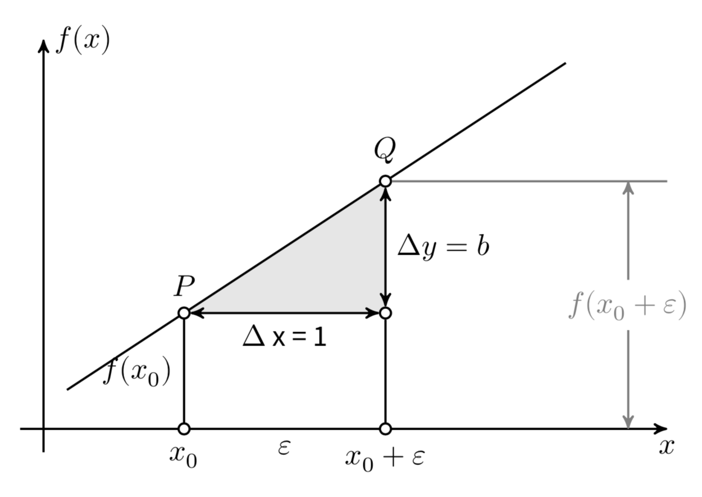

40. Introduzione#
Il fine primario dei ricercatori è quello di scoprire associazioni tra variabili e di fare confronti fra condizioni sperimentali. Nel caso della psicologia, il ricercatore vuole descrivere le relazioni tra i costrutti psicologici e le relazioni tra fenomeni psicologici e non psicologici (sociali, economici, storici, …). Abbiamo già visto come la correlazione di Pearson sia uno strumento adatto a descrivere le relazioni tra variabili. Infatti, la correlazione ci informa sulla direzione e sull’intensità della relazione lineare tra due variabili. Tuttavia, la correlazione non è sufficiente, in quanto il ricercatore ha a disposizione solo i dati di un campione, mentre vorrebbe descrivere la relazione tra le variabili nella popolazione. A causa della variabilità campionaria, le proprietà dei campioni sono necessariamente diverse da quelle della popolazione: ciò che si può osservare nella popolazione potrebbe non emergere nel campione e, al contrario, il campione può manifestare caratteristiche che non sono presenti nella popolazione. È dunque necessario chiarire, dal punto di vista statistico, il legame che intercorre tra le proprietà del campione e le proprietà della popolazione da cui esso è stato estratto. Questo è l’obiettivo del modello di regressione lineare. Tale modello utilizza la funzione matematica più semplice per descrivere la relazione fra due variabili, ovvero la funzione lineare. In questo Capitolo vedremo come il modello di regressione lineare possa essere usato per fare inferenza sulla relazione tra variabili. Inizieremo a descrivere le proprietà geometriche della funzione lineare per poi utilizzare questa semplice funzione per costruire un modello statistico secondo un approccio bayesiano.
40.1. La funzione lineare#
Iniziamo con un ripasso sulla funzione di lineare. Si chiama funzione lineare una funzione del tipo
dove \(a\) e \(b\) sono delle costanti. Il grafico di tale funzione è una retta di cui il parametro \(b\) è detto coefficiente angolare e il parametro \(a\) è detto intercetta con l’asse delle \(y\) [infatti, la retta interseca l’asse \(y\) nel punto \((0,a)\), se \(b \neq 0\)].
Per assegnare un’interpretazione geometrica alle costanti \(a\) e \(b\) si consideri la funzione
Tale funzione rappresenta un caso particolare, ovvero quello della proporzionalità diretta tra \(x\) e \(y\). Il caso generale della linearità
non fa altro che sommare una costante \(a\) a ciascuno dei valori \(y = b x\). Nella funzione lineare \(y = a + b x\), se \(b\) è positivo allora \(y\) aumenta al crescere di \(x\); se \(b\) è negativo \(y\) diminuisce al crescere di \(x\); se \(b=0\) la retta è orizzontale, ovvero \(y\) non muta al variare di \(x\).
Consideriamo ora più in dettaglio il coefficiente \(b\). Si consideri un punto \(x_0\) e un incremento arbitrario \(\varepsilon\), come indicato nella @fig-linearfunction. Le differenze \(\Delta x = (x_0 + \varepsilon) - x_0\) e \(\Delta y = f(x_0 + \varepsilon) - f(x_0)\) sono detti incrementi di \(x\) e \(y\). Il coefficiente angolare \(b\) è uguale al rapporto
indipendentemente dalla grandezza degli incrementi \(\Delta x\) e \(\Delta y\). Il modo più semplice per assegnare un’interpretazione geometrica al coefficiente angolare (o pendenza) della retta è quello di porre \(\Delta x = 1\). In tali circostanze, \(b = \Delta y\).

Possiamo dunque dire che la pendenza \(b\) di un retta è uguale all’incremento \(\Delta y\) associato ad un incremento unitario nella \(x\).
40.2. Una media per ciascuna osservazione#
In precedenza abbiamo visto come stimare i parametri di un modello bayesiano nel quale le osservazioni sono indipendenti e identicamente distribuite secondo una densità gaussiana,
Il modello dell’eq. (40.1) assume che ogni \(Y_i\) sia la realizzazione di una v.c. distribuita come \(\mathcal{N}(\mu, \sigma^2)\). Da un punto di vista bayesiano, questo modello può essere implementato assegnando delle distribuzioni a priori ai parametri \(\mu\) e \(\sigma\) e generando la verosimiglianza in base ai dati osservati.
Con queste informazioni, possono poi essere trovate le distribuzioni a posteriori dei parametri [GHV20]. Vediamo ora come sia possibile estendere questo modello bayesiano in modo che possa descrivere la relazione lineare tra due variabili.
40.3. Relazione lineare tra la media \(y \mid x\) e il predittore#
Il ricercatore si trova spesso nella condizione in cui osserva altre variabili di interesse associate a ciascuna risposta \(y_i\). Chiamiamo \(x\) una di tali variabili. Nel contesto del modello di regressione, la variabile \(x\) viene chiamata predittore (o variabile indipendente), in quanto il ricercatore è tipicamente interessato a predire \(y_i\) a partire dal valore assunto da \(x_i\). Chiediamoci dunque come si può estende il modello dell’eq. (40.1) per lo studio della relazione tra \(y_i\) e \(x_i\).
L’eq. (40.1) assume una media \(\mu\) comune per tutte le osservazioni \(Y_i\). Dal momento che desideriamo introdurre una nuova variabile \(x_i\) che assume un diverso valore per ciascuna osservazione \(y_i\), l’eq. (40.1) può essere modificata così da sostituire alla media comune \(\mu\) una media \(\mu_i\) specifica a ciascuna \(i\)-esima osservazione:
Si noti che le osservazioni \(Y_1, \dots, Y_n\) non sono più identicamente distribuite poiché hanno medie diverse, ma sono ancora indipendenti come indicato dalla notazione ind posta sopra il simbolo \(\sim\) nell’eq. (40.2).
L’eq. (40.2) afferma che ciascuna osservazione \(Y_i\) è estratta a caso dalla corrispondente distribuzione \(\mathcal{N}(\mu_i, \sigma)\). Al fine di potere descrivere la relazione tra il predittore \(x_i\) e la risposta \(Y_i\), il modello di regressione assume che la media della distribuzione da cui abbiamo estratto \(Y_i\), ovvero \(\mu_i\), sia una funzione lineare del predittore \(x_i\), ovvero
Nell’eq. (40.3), ciascuna \(x_i\) è una costante nota (ecco perché viene usata una lettera minuscola per la \(x\)) e \(\beta_0\) e \(\beta_ 1\) sono parametri incogniti. Questi parametri rappresentano l’intercetta e la pendenza della retta di regressione e sono delle variabili casuali.1 L’inferenza bayesiana procede assegnando una distribuzione a priori a \(\beta_0\) e a \(\beta_1\), trovando la verosimiglianza dei dati e calcolando la distribuzione a priori dei parametri \(\beta_0\) e a \(\beta_1\).
Nel modello dell’eq. (40.3), la funzione lineare \(\beta_0 + \beta_1 x_i\) è interpretata come il valore atteso della \(Y_i\) per ciascun valore \(x_i\). L’intercetta \(\beta_0\) rappresenta il valore atteso della \(Y_i\) quando \(x_i = 0\). La pendenza \(\beta_1\) rappresenta l’incremento atteso della \(Y_i\) quando \(x_i\) aumenta di un’unità.
È importante notare che la relazione lineare dell’eq. (40.2) di parametri \(\beta_0\) e \(\beta_1\) descrive l’associazione tra la media \(\mu_i\) e il predittore \(x_i\). In altri termini, tale relazione lineare fornisce una predizione sul valore atteso \(\mu_i\), non sul valore effettivo di ciascuna osservazione \(Y_i\).
40.4. Il modello lineare#
Sostituendo l’eq. (40.3) nell’eq. (40.2) otteniamo il modello lineare:
L’eq. (40.4) è dunque un caso speciale del modello di campionamento Normale, dove le \(Y_i\) seguono indipendentemente una densità Normale di media (\(\beta_0 + \beta_ 1 x_i\)) specifica per ciascuna osservazione, con una deviazione standard (\(\sigma\)) comune a tutte le osservazioni. Poiché include un solo predittore (\(x\)), questo modello è chiamato modello di regressione lineare bivariato.
40.4.1. Assunzioni#
Il modello statistico bivariato della regressione lineare assume che la variabile \(x\) sia fissa per disegno – in altre parole, assume che i valori \(x\) restano immutati tra campioni diversi. Potendo ipotizzare infiniti campioni tutti con gli stessi valori \(x\), in corrispondenza di ciascun valore \(x_i\) il modello ipotizza che vi sia una distribuzione di valori \(y\). A ciascun valore \(x_i\), con \(i = 1, 2, \dots, n\), corrisponde una distribuzione di valori \(y\) condizionati a \(x_i\), \(p(y \mid x_i)\).
Il modello statistico di regressione lineare assume che le distribuzioni condizionate \(p(y \mid x_i)\) sono
(assunzione di normalità), laddove
L’equazione precedente descrive l’assunzione di linearità.
Si noti che il parametro \(\sigma\) non ha un pedice: questo significa che il modello ipotizza una dispersione costante delle distribuzioni \(p(y \mid x_i), \forall i\). Tale assunzione va sotto il nome di omoschedasticità.
Se questa è la struttura della popolazione, possiamo pensare ad un campione casuale di ampiezza \(n\) come ad una serie di coppie \(x_i, y_i\), con \(i = 1, \dots, n\), nelle quali i valori \(x\) sono fissi per disegno e ciascun valore \(y_i\) è una realizzazione della variabile casuale \(Y = y_i \mid X = x_i\). Questa è l’ultima assunzione del modello statistico lineare: l’indipendenza. In maniera equivalente possiamo dire che gli errori \(\varepsilon_i = y_i - \hat{y}_i = y_i - (\beta_0 + \beta_1 x_i)\) sono variabili casuali distribuite secondo la legge Normale di parametri \(\mathcal{N}(0, \sigma)\).
40.5. Commenti e considerazioni finali#
Il modello di regressione lineare bivariato viene usato per descrivere la relazione lineare tra due variabili \(x\) e \(Y\), e per determinare il segno e l’intensità di tale relazione. Inoltre, il modello di regressione lineare consente di prevedere il valore della variabile dipendente \(Y\) in base al valore assunto dalla variabile indipendente \(x\).
- 1
Una notazione alternativa per tali parametri è \(\alpha\), \(\beta\), anziché \(\beta_0\), \(\beta_1\).